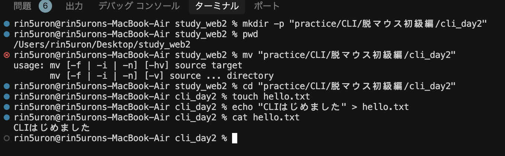
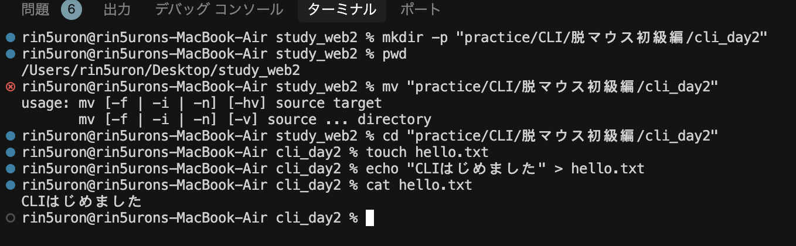
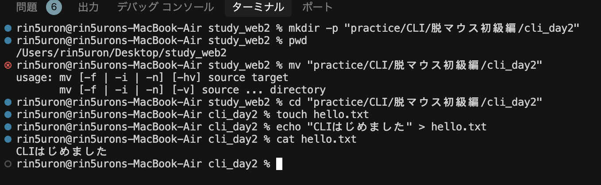

- ターミナルを開いて、自分の場所（フォルダ）を知ろう
- フォルダの中を見て、移動してみよう
pwd- 🔍 pwd = "Print Working Directory"
- ✅ 今いる場所（パス）を表示する。マウスでいうと「今どのフォルダを見てるか」。
ls- 🔍 ls = "List"
- ✅ 現在のフォルダ内にあるファイル・フォルダを一覧表示。
cd ~/Desktop- 🔍 cd = "Change Directory"
- ✅ デスクトップ（~/Desktop）に移動。~はホームディレクトリの省略記号。
pwd
ls- ✅ デスクトップに移動できたか再確認！

メモ:
・bquote> 状態:
入力待ち状態（マルチラインモード）でターミナルが迷子。タグの閉じ忘れやエラー文字の入力等が原因になることがい多い。
bquote> 状態になったら：
Ctrl + C を押してリセット！（一番安全）
- フォルダやファイルをコマンドで作れるようになる
# リポジトリ直下にディレクトリ作成
mkdir cli_day2
# practice/CLI/cli_day2を作成（親ディレクトリがない場合は同時作成）
mkdir -p "practice/CLI/脱マウス初級編/cli_day2"- 🔍 mkdir = "Make Directory"
- ✅ 「cli_day2」という名前のフォルダを作成
# リポジトリ直下の任意ファイルに移動
cd cli_day2
# 任意のディレクトリ内ファイルに移動/日本語を含むパスには必ずクォートを付ける
cd "practice/CLI/脱マウス初級編/cli_day2"- ✅ 作ったフォルダに移動
touch hello.txt- 🔍 touch = 空のファイルを作るコマンド
- ✅ hello.txt という空のテキストファイルを作成
echo "CLIはじめました" > hello.txt- 🔍 echo = 文字列を表示（出力）するコマンド
- ✅ >でファイルに書き込み。上書き保存される。
cat hello.txt- 🔍 cat = "concatenate"（つなげる）の略
- ✅ ファイルの中身を表示（読み取り専用）

メモ:
・コマンドとファイル名の区切り等は半角スペースを空ける
・日本語を含むパスには必ずクォートを付ける
・ルート直下にファイルを置いた後に、同ファイル名で違うディレクトリに作ったらターミナルが混乱してエラー。削除してから実行してもエラー。一度リセットするが吉。紛らわしいことはしない方が吉。
・Ctrl+Cはターミナルの状態はリセットしない
・cd,mv,mkdirの違い
✅ コマンド実行の停止のみ
[エラー内容と解決方法]
コマンドの使い分け
| 目的 | コマンド | 例 |
- 基本的なファイル操作をマウスなしで行う
mv hello.txt intro.txt- 🔍 mv = "Move"（移動）
- ✅ ファイル名の変更にも使える。ここではリネーム。
cp intro.txt intro_copy.txt- 🔍 cp = "Copy"
- ✅ ファイルをコピーして、複製を作る
rm intro_copy.txt- 🔍 rm = "Remove"
- ⚠️ 完全削除。ゴミ箱はなし！慎重に。
ls- ✅ ファイルがどう変化したか確認
スクリーンショット:
一言メモ:
- パス（場所の指定）に慣れよう。マウス感覚を言語化！
cd ..- 🔍 .. = 1つ上のフォルダ
- ✅ 1階層上に戻る
cd ~/Desktop- 🔍 ~ = ホームディレクトリ
- ✅ デスクトップへ一気に戻る「絶対パス」
cd cli_day2
cd ..- ✅ これが「相対パス」。現在地からの距離感で移動する。
スクリーンショット:
一言メモ:
- マウスを使わずに高速操作できるショートカットを習得
| 操作 | 効果 |
|---|---|
| ↑ / ↓ | 入力履歴の呼び出し |
Tabキー | コマンド・ファイル名の補完 |
Ctrl + C | 実行中のコマンドを止める |
Ctrl + L | 画面をクリア（clearと同じ） |
Ctrl + A | カーソルを行頭に移動 |
Ctrl + E | カーソルを行末に移動 |
cd ~/Desktop
mkdir cli_final
cd cli_final
touch final.txt
echo "脱マウス達成！" > final.txt
cat final.txtスクリーンショット:
一言メモ:
これであなたはターミナルで移動・作成・削除・表示・編集の基本5技をマスター！
GUIに頼らず、キーボードだけで作業できる強いエンジニアの土台ができました💪